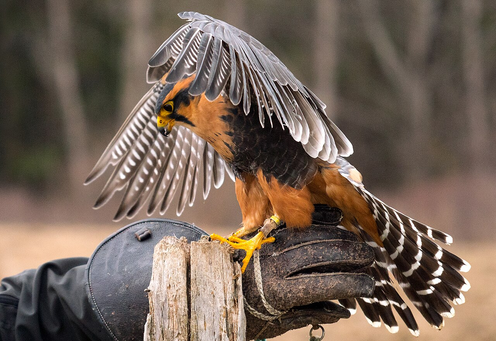

Resources → Categories
Falconry Bird Breeders
Acquiring a raptor is one of the most significant decisions in a falconer’s career. Whether you are a General class falconer looking for your first captive-bred Harris’s hawk or a Master class practitioner seeking a top-tier gyrfalcon, choosing the right breeder determines the health, temperament, and hunting potential of your bird for years to come. This guide covers what breeders produce, how to evaluate them, and the legal framework governing raptor sales in the United States.
Common Species Bred for Falconry
Raptor breeders in the United States produce a range of species tailored to different hunting styles, experience levels, and climates. The most commonly bred falconry birds include:
Harris’s Hawk (Parabuteo unicinctus). The most popular captive-bred falconry bird in North America. Harris’s hawks are social, tolerant of handling, and adaptable to a wide variety of quarry from rabbits to squirrels. Their cooperative nature makes them excellent for both beginners (at the General level) and experienced falconers. They can even be flown in casts (groups), a rarity among raptors.
Red-tailed Hawk (Buteo jamaicensis). While most red-tails flown in falconry are wild-trapped passage birds (first-year juveniles), some breeders produce captive-bred red-tails. These birds are powerful, versatile hunters capable of taking rabbits, squirrels, and even larger quarry like pheasants. Red-tails are the classic American falconry bird.
Peregrine Falcon (Falco peregrinus). The peregrine is the ultimate longwing—built for high-speed stoops on flying quarry such as ducks, pigeons, and game birds. Captive breeding programs were instrumental in saving the peregrine from extinction after the DDT era, and today a healthy domestic breeding population supplies falconers across the country.
Gyrfalcon (Falco rusticolus). The largest falcon species and a prized bird for experienced falconers who hunt open terrain. Gyrfalcons are bred in several color morphs—white, silver, gray, and dark—and are used on sage grouse, ducks, and other large quarry. They require cold climates or climate-controlled housing in warmer regions.
Hybrid Falcons. Breeders produce various falcon hybrids (e.g., peregrine × gyrfalcon, peregrine × prairie falcon) that combine desirable traits from each parent species. Hybrids can offer increased size, speed, or temperament advantages for specific hunting applications.
Other species available from breeders include prairie falcons, merlins, aplomado falcons, and various hawk and eagle species for Master class falconers.
What to Look for in a Breeder
Choosing a reputable breeder protects both you and the bird. Here are the key factors to assess:
- Breeding experience and track record. How long has the breeder been producing birds? How many clutches do they produce per year? Ask for references from previous buyers, especially falconers who have flown the breeder’s birds in the field.
- Bloodline documentation. Quality breeders maintain detailed records of their breeding stock’s lineage, health history, and hunting performance. Some bloodlines are known for particular traits—calm temperament, high prey drive, or physical robustness.
- Health screening. Birds should be veterinary-examined before sale, with documentation of disease testing (especially for aspergillosis and herpesvirus). The breeder should be transparent about any health issues in their breeding stock.
- Socialization and imprinting protocols. How the bird is raised in its first weeks profoundly affects its behavior for life. Ask whether the breeder uses natural parent-rearing, foster-rearing, or hand-rearing (imprinting), and understand the implications of each method for your intended use.
- Post-sale support. The best breeders remain available after the sale to answer training questions, troubleshoot behavioral issues, and provide guidance through the bird’s first hunting season.
- Facility quality. If possible, visit the breeding facility. Chambers should be clean, spacious, and designed to minimize stress on breeding pairs. Healthy parent birds produce healthy offspring.
Pricing & What Affects Cost
Raptor prices vary dramatically by species, lineage, and demand. Here are general ranges as of 2025:
- Harris’s Hawk: $500–$2,000. The most affordable captive-bred option. Price varies by sex (females, being larger, often cost more), color phase, and breeder reputation.
- Red-tailed Hawk (captive-bred): $500–$1,500. Less common than wild-trapped passage birds but available from select breeders.
- Peregrine Falcon: $1,500–$5,000. Price depends on subspecies, lineage, and whether the bird is from proven hunting stock.
- Gyrfalcon: $3,000–$10,000+. White-morph gyrfalcons command the highest prices. Top hunting bloodlines from established breeders can exceed $10,000.
- Hybrid Falcons: $2,000–$8,000. Pricing depends on the parent species combination and the breeder’s reputation.
Beyond the purchase price, factor in shipping costs (live bird transport typically runs $200–$500 domestically), the initial veterinary exam, and equipment for the bird’s first season (glove, jesses, bells, transmitter, perch, and mews construction or modification).
Legal Requirements & Permits
The sale and possession of raptors in the United States is tightly regulated at both the federal and state level:
- USFWS Captive Propagation Permit. Any person breeding raptors must hold a federal Raptor Propagation permit issued by the U.S. Fish & Wildlife Service. This permit specifies which species the breeder is authorized to produce and imposes reporting requirements for all eggs laid, hatched, and birds transferred.
- State breeding permits. Most states require an additional state-level breeding permit. Requirements vary—some states limit breeding to Master class falconers, while others allow General class falconers to breed certain species.
- Buyer license requirements. To purchase a captive-bred raptor, you must hold a valid falconry license at the appropriate level. Apprentices are generally restricted to wild-trapped red-tailed hawks or American kestrels and cannot purchase captive-bred birds. General and Master class falconers have access to a broader range of species.
- 3-186A reporting. Every transfer of a raptor must be documented on a USFWS Form 3-186A within five days. Both the seller and buyer submit forms recording the bird’s species, band number, and the transaction details.
- CITES considerations. If you are importing a bird from outside the United States or purchasing a CITES-listed species, additional permits and documentation are required. International transactions are complex and should involve an experienced customs broker.
Captive-Bred vs. Wild-Trapped Raptors
Both captive-bred and wild-trapped raptors have legitimate roles in American falconry, and each comes with distinct advantages:
Captive-bred birds are available year-round (typically shipped in spring or summer), come from known genetic backgrounds, and can be socialized from hatch for human interaction. They tend to be calmer on the fist and more tolerant of novel environments. However, some falconers find that captive-bred hawks and falcons require more careful conditioning to develop strong hunting instincts compared to wild birds.
Wild-trapped birds (usually passage-age juveniles in their first autumn) come with pre-installed survival instincts and a fully developed prey drive. Trapping is limited to specific seasons and requires state-issued permits. Wild-trapped birds must be trained more carefully during the initial manning process, but many experienced falconers prefer them for their intensity in the field. Apprentices in most states are required to start with a wild-trapped red-tailed hawk or American kestrel.
The choice between captive-bred and wild-trapped often comes down to personal philosophy, intended quarry, and what your state allows at your license level. Discuss options with your sponsor or mentor before committing to a purchase.
List Your Breeding Program
Reach falconers searching for quality captive-bred raptors. Featured listings appear first.
Add Your Business